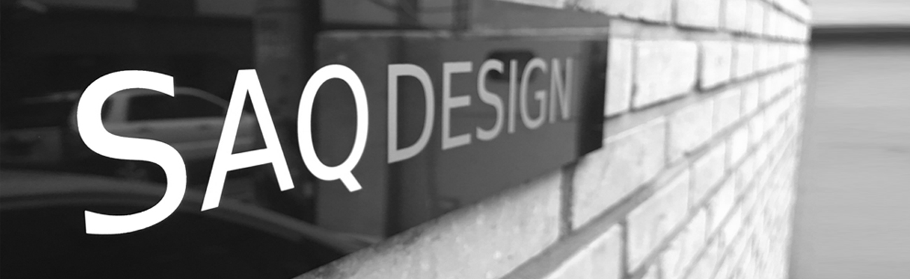
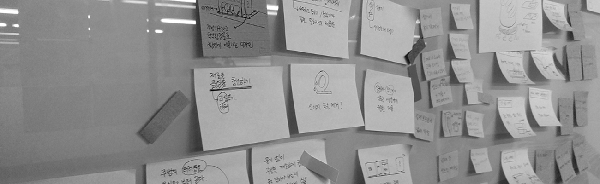
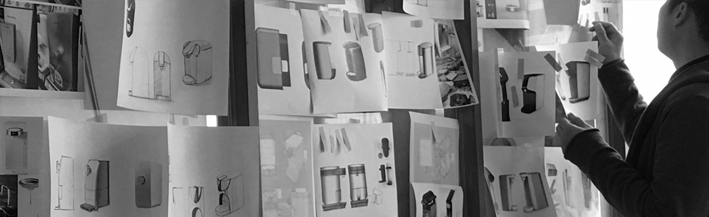
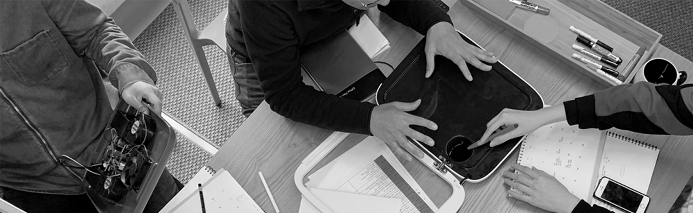
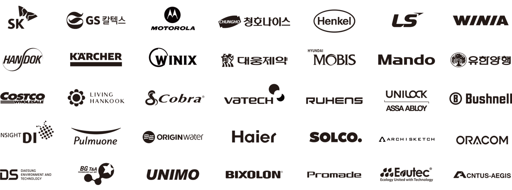

2007년에 시작된 삭디자인은 Sustainability And Quality의 앞 글자를 따 만들어진 이름으로 오랫동안 사랑 받을 수 있는 좋은 디자인을 만드는 회사, 지속가능한 양질의 디자인이란 뜻을 담고 있습니다. 삭디자인은 완성도 있는 디자인을 만들기 위해 엔지니어링 전문가를 포함한 IT기기, 생활가전, 생활용품, 코스메틱제품, 패키지, 산업장비 등 다양한 분야의 디자인 전문가들이 모여 설립된 제품디자인을 기본으로 하는 종합디자인 회사입니다. 400여건의 국내외 디자인개발컨설팅 경험과 끊임없는 문화의 변화에 대한 연구를 바탕으로 기업과 소비자 모두가 즐길 수 있는 차별화된 높은 수준의 디자인을 제공하고 있습니다. 삭디자인은 시장을 리딩하고 꼭 성공할 수 있는 디자인을 제시하기 위해 소비자 제품사용패턴을 분석하고 그에 대한 합리적인 대안을 디자인 스토리로 전환시켜 제품에 담고 있으며, 특히 양산제품의 완성도를 높이기 위한 구조설계, 금형관리, 생산관리, 마케팅에 이르는 폭넓은 팔로우업 컨설팅을 강점으로 하고 있습니다.
Standing for "Sustainability And Quality", the name is meant to define the purpose of the company, providing a design that's long lasting and sustainable in quality. Established in 2007 with a focus on product design, the company boasts a team with experience in various fields, such as engineering, car design, lifestyle products, health & care products, cosmetics, electronic devices and more. Based on a portfolio of more than 400 design projects for both local and international markets, as well as a restless search for culture change, SAQ offers high standard design solutions meant to meet the needs both clients and users. SAQ analyzes products use cycles and studies markets in order to propose meaningful, successful and credible alternatives. With a special care for manufacturing completion, SAQ also provides follow-up consulting, and has deep knowledge of product infrastructure, mold management, manufacturing management and marketing.
삭디자인은 단순히 제품을 디자인을 하는 것이 아닌, 우리 모두의 더 나은 미래를 위한 디자인을 추구합니다.
외형의 심미적 가치만 추구하지 않고 내면의 가치가 결합된 의미 있는 디자인을 통해 세상을 움직일 수 있는 디자인을 제공하고자 합니다.
이를 위해 삭디자인은 지난 10년이상 쌓아온 많은 디자인 경험을 바탕으로 더 나은 가치를 만드는 일에 최선의 노력을 하고 있습니다.
이러한 노력들을 통해 최상의 비지니스 솔루션을 제공할 것이며, 파트너사의 사업 성공을 위해 끝까지 함께 할 것을 약속 드립니다.
SAQ Design is not just about designing products, but seeking for a better future for all of us. We want to provide a design that can move the world through a meaningful design that combines inner values without seeking only the aesthetic value of appearance. To this end, SAQ Design has been working hard to create better value based on more than 10 years of experience in design. Through these efforts, we will provide you with the best business solution and promise to be together for your business success.

삭디자인은 사용할수록 세심한 배려와 가치가 느껴지는 디자인, 새롭고 즐겁고 유익한 경험을 줄 수 있는 디자인을 만들기 위해 노력합니다.
삭디자인은 단순히 의뢰 받은 제품을 디자인하기보다는 한발 더 나아가 실제로 제품을 사용하는 사용자를 먼저 이해하고 생각합니다. 다양한 분야의 전문가들이 모여 제품에 대한 끊임없는 분석과 깊이 있는 연구를 통해 사용자에게 새로운 경험, 좋은 경험, 유익한 경험을 줄 수 있는 디자인을 만들기 위해 항상 노력합니다.
SAQ Design strives to create a design that gives you a careful consideration, a sense of value, and a new, fun and informative experience as you use it.
Rather than simply designing a commissioned product, SAQ Design takes it a step further and understands the user who actually uses the product. We constantly strive to create designs that will give users new experiences, fine experiences, and beneficial experiences through constant analysis and in-depth study of various products

좋은 디자인에는 명확한 컨셉과 풍성한 스토리가 녹아 있습니다. 삭디자인의 디자이너들은 제품에 풍성한 스토리와 즐거움을 담기 위해 노력합니다.
삭디자인은 외형의 심미적 가치와 내면의 가치가 균형 있게 결합된 의미 있는 디자인을 추구합니다. 외형의 디자인은 과장되지 않지만 새로운 시각적 자극을 줄 수 있는 디자인을, 내면의 가치는 명확한 컨셉과 풍성한 스토리가 녹아 들어 있는 디자인을 하고자 합니다. 제품의 외형에 담긴 심미적 가치는 사용자에게 새로운 시각적 자극을 주며 발길을 멈추게 하며, 거기에 담긴 의미 있는 스토리는 제품을 구매하게 만듭니다. 소비자에게 친숙하게 다가갈 수 있는 디자인, 소비자가 구매욕구를 느낄 수 있는 디자인, 삭디자인이 만들어 갑니다.
A good design has a clear concept and affluent story. SAQ designers strive to bring affluent stories and fun to their products
SAQ design pursues a meaningful design that combines aesthetic and inner value of appearance. The design of the exterior is not exaggerated but it can give you a whole new visual stimulus, and the value of the interior is designed with clear concepts and rich stories. The aesthetic value of a product's appearance gives users a new visual stimulus and stops them from walking, and the meaningful story in it makes them buy the product. We're creating designs that are familiar to consumers, designs that enable consumers to feel their desire to buy.

아무리 좋은 디자인이라도 명확한 제조솔루션이 있어야 세상에 태어날 수 있습니다. 삭디자인은 다양한 제조 경험과 다양한 분야의 전문인력을 통해 토탈 제조 솔루션을 제공합니다
삭디자인은 지난 10여년간 다양한 디자인 프로젝트를 수행하면서 쌓아온 노하우와 엔지니어링 베이스의 전문 인력을 통해 제품 양산까지의 토탈 제조 솔루션을 제공합니다. 제조 공정에 대한 높은 이해도와 다양한 후가공 경험을 통해 양산과정에서 발생할 수 있는 문제를 최소화하여 디자인 원안 그대로 양산될 수 있도록 최적화된 솔루션을 제공합니다.
No matter how good your design is, you need a clear manufacturing solution to be born into the world.
SAQ Design provides solutions through its diverse manufacturing experience and expertise in various fields.
SAQ Design provides total manufacturing solutions from production know-how and engineering base manpower through various design projects for 10 years. We have optimized understanding of the manufacturing process and various post-processing experiences to minimize the problems that can occur during the mass production process.

삭디자인은 사회변화와 환경문제에 대한 문제의식을 가지고 디자인을 하고자 노력합니다.
저희 삭디자인은 사회와 환경에 대해 고민합니다. 삭디자인의 모든 디자이너들은 다양한 사회, 문화, 환경의 변화를 주의 깊게 관찰하고 그것을 디자인에 담아 낼 수 있도록 노력합니다. 친환경소재, 환경오염을 최소화할 수 있는 공정 및 후가공, 등 디자이너로서 사회변화와 환경문제에 대한 문제의식을 가지고 디자인을 하고자 합니다.
SAQ Design strives to design with awareness of social change and environmental problems.
SAQ Design is concerned about society and the environment. All SAQ designers strive to carefully observe changes in various societies, cultures, and environments and bring them to the design. As a designer, we will design with the awareness of the issues of social change and environmental problems such as eco-friendly materials, processes that can minimize environmental pollution, and post-processing.

(주)삭디자인 컨설팅_서울시 서초구 남부순환로337가길, 43-8(2F)
SAQ Design Consulting Inc. 43-8, Nambusunhwan-ro 337ga-gill
Seocho-gu Seoul Korea. 06710
T. +82 2 521 3581
F. +82 2 521 3582
M. webmaster@saqdesign.com